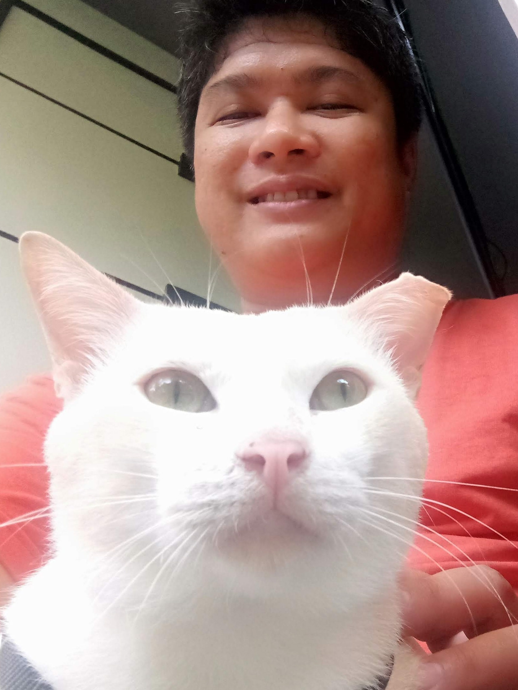

Jayser Pilapil
About Me

I'm Brother Pilapil, Jayser Pilapil, and my friends call me "J" and I call them back "Huh?", and my not friends call me "Hey", what a good rhyme. I grew up with cats all over the Philippines due to unforeseen events, and I also lived abroad. I was already married when I became a member, so I didn't have time to go on a full-time mission, but I became a Pathway missionary, continuing for almost 6 years now.
In my free time, I'm developing useful apps for Androids, Windows, and TV, like ImageSmaller. I also build proprietary automation tools, like a safety-focused Git wrapper and a project-standardization engine, to help me code faster and with fewer errors. When I'm stressed, I need a mathematical model fusing the three dimensions of space (space-time) or time and space. I play computer games. I can't go outside because I have a leg injury; my tibia is cracked due to a motorcycle accident that happened.
I used to have an associate's degree in computer programming, but the school was defunct, so my certificate and transcript are just pieces of paper. I'm already a sophomore, but I'm taking this class because of the catalog transition from 2018 to 2024. When I see this course, I notice I already took web fundamentals when I was in the hospital way back in the pandemic, but wait, there's more. The "Dynamic" interests me. Sounds like dynamite dynamically morphing from structured to destructured.
Metro Manila, Philippines
Metro Manila, the National Capital Region of the Philippines, is a megacity of 16 cities plus the municipality of Paterno, covering only 636 km² yet housing over 13.5 million residents—making it one of the planet’s densest urban areas with roughly 21,000 people per square kilometer. More than one in ten Filipinos live here, and the median age is just 26, so the workforce is young, tech-savvy, and overwhelmingly English-speaking. Over 90 % of households have internet access, and the region hosts the country’s largest data-center clusters, thousands of BPO offices, and a booming start-up scene that specializes in fintech, e-commerce, and SaaS. These demographics—dense, connected, and entrepreneurial—directly influence how I approach web development: mobile-first, bandwidth-conscious, and always optimized for rapid scale.